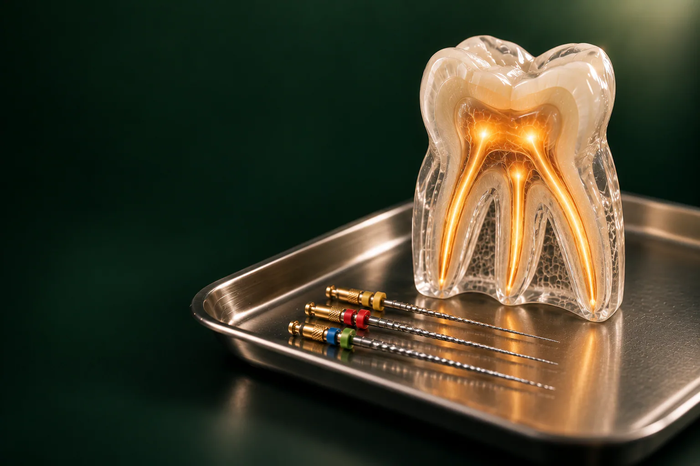

Читайкин Артём Сергеевич
Терапевт, эндодонтист
Лечение кариеса и каналов, сохранение зубов
Записаться к врачу
Лечение каналов зуба нужно, когда воспаление дошло до нерва или до тканей у верхушки корня: врач очищает и дезинфицирует корневые каналы, затем плотно их пломбирует, и зуб остаётся во рту, а не уходит на удаление.
Имеются противопоказания. Необходима консультация специалиста.
В стоматологии «Умная Медицина» в пос. Удельная (Раменский округ) каналами занимается стоматолог-терапевт, эндодонтист Читайкин Артём Сергеевич. Лечение пульпита: от 11 000 ₽, периодонтита, от 20 000 ₽. Первый шаг: консультация и снимок, после которых вы знаете диагноз и стоимость.
Цена зависит от диагноза и от того, сколько каналов в зубе. У резца канал обычно один, у моляра: три-четыре, и они бывают узкими и изогнутыми. Повторное лечение сложнее первичного: сначала нужно убрать старую пломбу. Ниже: основные услуги; точную сумму эндодонтист называет после осмотра и снимка и записывает в план лечения.
Цены «от»: минимальные. На итог влияют число и форма каналов, наличие старых пломб, очаг воспаления у корня и количество визитов. Стоимость повторного лечения каналов врач назовёт после осмотра и снимка. Цены актуальны на 18.10.2026.
Все цены клиники: на странице цены, рассрочка и налоговый вычет.
Внутри каждого зуба есть полость, а от неё к верхушкам корней идут тонкие каналы. В них находится пульпа: нерв, сосуды и соединительная ткань. Раздел стоматологии, который занимается этой внутренней частью зуба, называется эндодонтией, а врач: эндодонтистом.
Когда кариес проникает глубоко, микробы попадают в пульпу, и она воспаляется: это пульпит. Если его не лечить, инфекция по каналам выходит за верхушку корня и поражает окружающие ткани: развивается периодонтит. Со временем у корня может сформироваться гранулёма или киста. Задача врача: убрать из каналов инфицированные ткани, обеззаразить их и закрыть так, чтобы микробы не вернулись. Без этого зуб рано или поздно приходится удалять. Другие направления терапии, на странице лечение зубов.
Признаки, с которыми стоит прийти к эндодонтисту:
Иногда хронический периодонтит протекает почти без симптомов и обнаруживается случайно: на панорамном снимке перед протезированием или имплантацией. Такой зуб тоже нужно лечить, иначе очаг может обостриться.
Удалять нерв без показаний врач не будет: живой зуб прочнее и дольше служит. При неглубоком кариесе пульпу сохраняют: это обычное лечение кариеса с лечебной прокладкой. Если пульпа воспалена необратимо или уже погибла, удаление нерва: единственный способ сохранить сам зуб. Решение принимают по жалобам, тестам и снимку. Возможно ли лечение зуба без удаления нерва в вашем случае, эндодонтист скажет на консультации.
При пульпите каналы иногда удаётся пролечить за один приём. При периодонтите, кисте и повторном лечении между визитами обычно нужна пауза, пока лечебная паста подавляет инфекцию, поэтому приёмов больше. Точное число визитов и длительность каждого врач называет заранее и записывает в план лечения.
Сложные каналы эндодонтист лечит с дентальным микроскопом, который увеличивает рабочее поле в 25–40 раз. Под оптикой видны устья всех каналов, их изгибы, трещины и остатки старого материала. Пациент при этом лежит горизонтально и не держит рот широко открытым. Подробнее: на странице лечение зубов под микроскопом.
Повторное лечение нужно, если раньше канал запломбировали не до верхушки, пропустили одну из ветвей или пломба стала негерметичной. Тогда у корня снова появляется воспаление, иногда через годы после первого лечения.
Врач распломбирует канал: удаляет старый материал, при необходимости штифт, заново чистит, дезинфицирует и пломбирует. С микроскопом можно закрыть перфорацию: отверстие в стенке корня, которое осталось после прежнего лечения. Раньше такие зубы чаще удаляли, потому что через перфорацию проникала инфекция. Сейчас шанс сохранить зуб есть, но решение врач принимает только после КТ.
Периодонтит, воспаление связок и кости вокруг верхушки корня. Бывает острым, с выраженной болью при накусывании и отёком, и хроническим, когда зуб почти не беспокоит. Гранулёма: небольшой очаг хронического воспаления, киста, полость с оболочкой и жидким содержимым.
Небольшую гранулёму и кисту чаще всего лечат через канал, без разреза: каналы тщательно очищают, оставляют лечебную пасту и после пломбирования следят по снимкам, уменьшается ли очаг. Если образование крупное или лечение через канал не помогло, врач обсуждает хирургический вариант. Подробнее: на странице лечение кисты зуба.
Зуб без нерва не чувствует боли, но становится более хрупким: стенки истончены кариесом и доступом к каналам. Если разрушение небольшое, достаточно пломбы. Если коронковой части мало, врач ставит в корень культевую вкладку: от 5 500 ₽, а сверху коронку. Жевательные зубы после эндодонтического лечения часто рекомендуют покрыть коронкой, чтобы они не раскололись под нагрузкой. Что нужно вашему зубу, скажет ортопед после завершения лечения каналов. Условия гарантии врач объяснит до начала лечения.
Если боль нарастает, появился отёк или поднялась температура: звоните в клинику.
Корневыми каналами в клинике занимается эндодонтист: стоматолог-терапевт с отдельной специализацией по внутренней части зуба. Он же ведёт повторное лечение и работу с микроскопом.
Если после лечения нужна вкладка или коронка, зуб восстанавливают ортопеды клиники, а при показаниях к операции подключаются хирурги. Все специалисты: на странице врачи.
Терапевт, эндодонтист
Лечение кариеса и каналов, сохранение зубов
Записаться к врачуОтзывы о клинике и врачах: на ПроДокторов, Яндекс Картах и 2ГИС.
Это лечение внутренней части зуба: пульпы и корневых каналов. Сюда относится терапия пульпита и периодонтита, повторное лечение ранее запломбированных каналов и работа с очагами воспаления у верхушки корня.
Лечение проводят под местной анестезией, поэтому во время приёма боли быть не должно. Если зуб сильно воспалён, врач может дополнительно усилить обезболивание. Неприятные ощущения после лечения обычно связаны с реакцией тканей у корня.
Несколько дней лёгкая ноющая боль при накусывании, частая реакция тканей вокруг корня, она проходит сама. Насторожить должны усиливающаяся боль, отёк, температура или боль дольше недели: в этом случае нужно показаться врачу.
Зуб перестаёт чувствовать холодное и горячее, но продолжает работать при жевании. Он становится более хрупким и может со временем немного потемнеть, поэтому после лечения его укрепляют пломбой, вкладкой или коронкой.
Чаще всего из-за того, что канал был запломбирован не до конца, одна из ветвей осталась необработанной или пломба потеряла герметичность. Тогда помогает повторное лечение каналов; его возможность оценивают по КТ.
Может, если в канале осталась инфекция. Киста нередко растёт без симптомов и обнаруживается на снимке. Небольшую кисту обычно лечат через канал, крупную, хирургически; тактику выбирают после КТ.
Это небольшая операция: через разрез на десне хирург удаляет верхушку корня вместе с очагом воспаления, а сам зуб сохраняется. Её предлагают, когда вылечить очаг через канал не удаётся. Есть ли к ней показания в вашем случае, врач скажет после КТ.
Удаление нерва и удаление зуба: разные вмешательства. Задача лечения каналов как раз в том, чтобы убрать воспалённый нерв и сохранить зуб. Удалять зуб приходится, только если корень разрушен или треснул и восстановить его нельзя.
Лечение пульпита: от 11 000 ₽, периодонтита, от 20 000 ₽; стоимость повторного лечения врач называет после снимка. Консультация эндодонтиста бесплатная, если остаётесь на лечение, прицельный снимок, 500 ₽.
Запишитесь на консультацию: план лечения с ценой по этапам
Имеются противопоказания. Необходима консультация специалиста.
Адрес клиники: Московская обл., Раменский округ, пос. Удельная, ул. Громова, 10/2. Клиника рядом с Жуковским; по соседству Малаховка, Быково, Ильинский, Родники, Островцы, Красково и Октябрьский. Пациенты приезжают и из Люберец, Раменского и Балашихи. Если зуб уже лечили в другой клинике, возьмите с собой старые снимки: они помогут спланировать повторное лечение.
На машине: из Жуковского через Быково, без выезда в Москву. У клиники есть бесплатная парковка.
На МЦД-3: до станции Удельная, от неё пешком до клиники. Из Жуковского: от станции Отдых три остановки без пересадок (Ильинская, Быково, Удельная).
Подробнее о клинике: на странице стоматология в Удельной.
Имеются противопоказания. Необходима консультация специалиста.
пгт Удельная, Раменский округ, рядом с Жуковским.
Ежедневно с 9:00 до 21:00
+7 495 150-36-15К нам ездят из Жуковского, Раменского, Быкова, Ильинского, Красково, Малаховки, Островцов, Люберец и Балашихи.
Перезвоним за 5 минут, подберём врача и удобное время.
Оставьте номер, администратор перезвонит и ответит на вопросы.
Подойдёт КТ, панорама, прицельный снимок или фото плана лечения из другой клиники. Врач посмотрит и ответит в течение рабочего дня. Это бесплатно.
Хирург, ортопед и терапевт осмотрят вас вместе, сделаем КТ. Консультация бесплатная, если остаётесь на лечение. Стоимость лечения врач назовёт после осмотра.
Консультацию ведут вместе
 ХирургМихаил
ХирургМихаил ОртопедЕвгенийТерапевтАртём
ОртопедЕвгенийТерапевтАртёмПервый визит 0 ₽, если остаётесь на лечение
Хирург, ортопед и терапевт посмотрят ваш случай вместе и предложат два-три варианта с ценой. Оставьте номер, администратор перезвонит и подберёт время.
Скидка 10% на лечение, если оплатить его в день консультации
Перезвоним за 5 минут, ежедневно с 9:00 до 21:00.